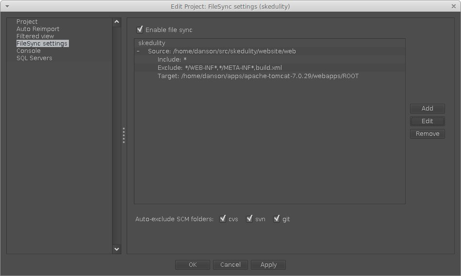
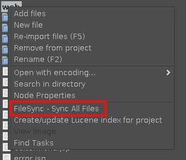

Configuration is per project, so use the project properties to set which files in your project get copied where.
NOTE: It is not required that a file actually belong to a project to be included in a file sync. It just needs to be in a project directory.

File synchronization is enabled for the project by checking the "Enable file sync" checkbox.
You can automatically exclude cvs, svn, and git directories by checking the appropriate checkboxes.
You can add multiple directories to sync per project and define includes and excludes for each directory.
For each directory:
The "Edit" button allows you to make changes to an existing sync definition.
The "Add" button allows to to create a new sync definition.
The "Remove" button will remove the sync definition and optionally remove all files from the target directory.

When first setting up a project for FileSync, you will probably want to do
a full synchronization to get all your project files to the destination. Use
the ProjectViewer context menu and select "FileSync - Sync All Files". You
can use this action at any time to resync your files. This action actually
removes all files from your defined target directories, then uses your sync
definitions to repopulate those directories.
The glob wildcards used by this plugin are the same glob patterns supported by jEdit, including using the (re) prefix to indicate the glob is actually a regular expression. See the details in jEdit's help files, in particular, the section in Appendix D titled "Glob Patterns". One minor difference is that file name matching is case-insensitive on Windows and case-sensitive on all other operating systems.
Here are a few examples for include and exclude filters:
*.txt will match c.txt
*.jpg will not match c.txt
*.txt,*.jpg will match c.txt
a/b/* will match a/b/c.txt
a/*/c.txt will match a/b/c.txt
*.??? will match c.txt
*.???? will not match c.txt
For example, to include all files except anything in a javadoc folder, you
could use:
Include: *
Exclude: */javadoc*
Notice that it's */javadoc* and not */javadoc/*. Using the first form also
excludes the javadoc folder. Using the second form will cause the javadoc
folder to be copied, but the folder itself will be empty.
Here are a few more examples from jEdit's help file:
* will match all files.
*.java will match all files whose names end with “.java”.
*.[ch] will match all files whose names end with either “.c” or “.h”.
*.{c,cpp,h,hpp,cxx,hxx} will match all C or C++ files.
[^#]* will match all files whose names do not start with “#”.
Here is an example of using the (re) prefix to indicate the glob pattern is
actually a regular expression:
(re).*\.(h|c(c|pp)?) will match *.c, *.cpp, *.h, *.cc
Credits
Inspiration for this plugin came from the FileSync plugin for Eclipse:
http://andrei.gmxhome.de/filesync/index.html.
This not a port, I didn't use any code from the Eclipse FileSync plugin.